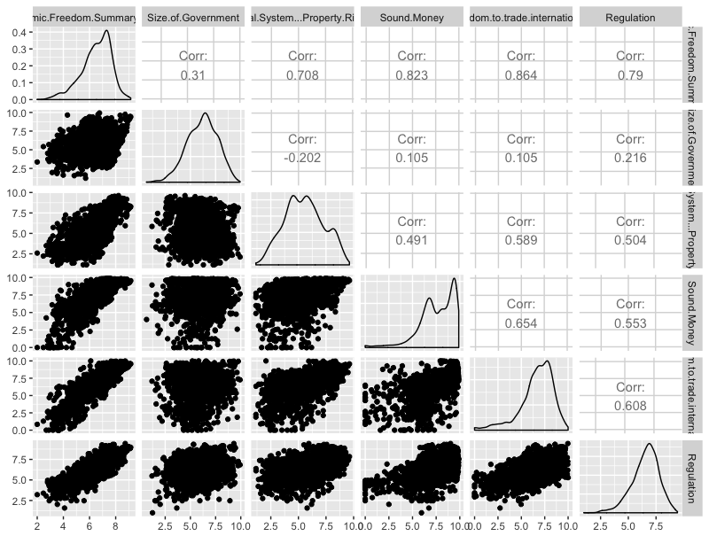

Link to Final Work: https://public.tableau.com/profile/amir.rahbaran#!/vizhome/WiP-Udacity-FP/EconomyofFreedom?publish=yes
Each year the Cato and Fraser Institute release together a report on economic freedom around the world, ranking almost all countries. Countries with a strong economic freedom have higher investment rates, more rapid economic growth, higher income levels, and a more rapid reduction in poverty rates.1 I am interested in the long term development of economic freedom per continent, distributions of all five factors (mostly are roughly normally distributed or left skewed, but not right skewed) and how each country is performing in 2014 (latest data point). Also some correlation between the factors were of my interest.
Besides the main data, ecodata_clean_nqsn.csv, I used Countries.xlsxto map each country in the csv-file to their continent.
The first I did, was to plot all variables with R, to get a feeling for the data distribution and correlation:

For the world map, I didn’t use gradient colours for the countries but rather buckets, as I thought this give a better overview. I chose green and blue as they’re not “opposite” but transition nicely into each other.
Histograms: I made the main histogram orange (in the final version) and not default blue to make it stand out. I changed the bin width to 0,5 for all histograms, as I it’s easier to read and makes all histograms comparable.
Generally speaking, I really enjoyed the default settings of Tableau.
I added my visualization in the slack group and discussion forum. I received the following feedback in the forum (no feedback in chat):
“I'd like to suggest to change the title into a full sentence which is the insights you want your reader to garner from the current slide.
Please also limit the text you want to overlay on the visualization. The focus should be visualization.
Regarding histograms, you can just make separate worksheets for each one and put them on a dashboard and drag that over into your story. This way, you can arrange them however you want.“
I agreed on all three points of the feedback (thank you!), so I improved the visualization accordingly.
1 https://www.fraserinstitute.org/studies/economic-freedom-of-the-world-2016-annual-report
https://object.cato.org/sites/cato.org/files/pubs/efw/efw-2015-executive-summary-updated.pdf
https://object.cato.org/sites/cato.org/files/pubs/efw/efw-2015-appendix-updated.pdf